定义：在样本空间Ω上的实值函数X＝X（∞）称为随机变量，常用大写字母X，Y，Z等表示随机变量，其取值用小写字母x，y，z等表示．
（1）离散随机变量：一个随机变量仅可能取有限个或可列个值；
（2）连续随机变量：一个随机变量的可能取值充满数轴上的一个区间（a，b），其中a可以是－∞可以是∞．
这个定义表明：函数的自变量（样本点）可以是数，也可以不是数，但因变量一定是实数．
一般变量与随机变量的区别：有没有分布函数．
（1）离散型随机变量定义：设离散随机变量X的分布列为p（xi）＝P（X＝xi），i＝1，2，…，n，…如果
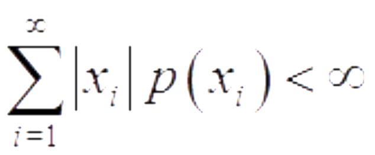则称
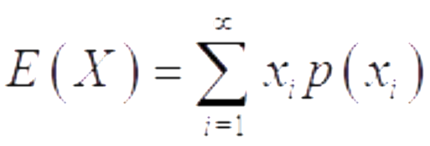
为随机变量X的数学期望，或称作该分布的数学期望，简称期望或均值．若级数
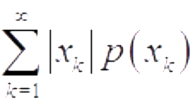不收敛，则称X的数学期望不存在．
（2）连续型随机变量
定义：设连续随机变量x的密度函数为p（x）．如果
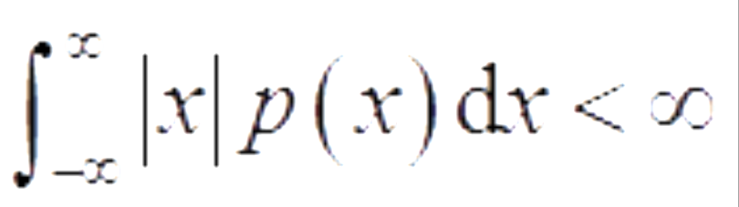
则称
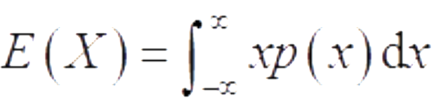
为X的数学期望，或称作该分布p（x）的数学期望，简称期望或均值．若
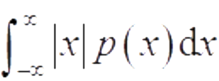
不收敛，则称X的数学期望不存在．
1)方差与标准差的定义
若随机变量X2的数学期望E（X2）存在，则称偏差平方（X－EX）2的数学期望E（X－EX）2为随机变量X（或相应分布）的方差，记为
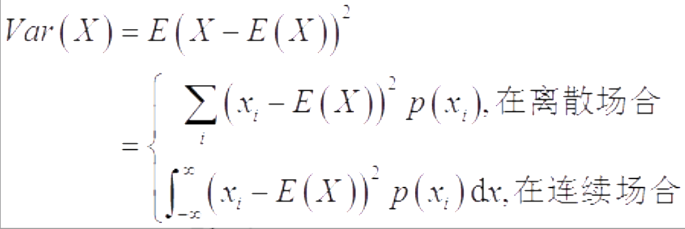
方差的正平方根
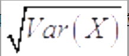
为随机变量X（或相应分布）的标准差，记为σ（X），
或σX．注：如果随机变量X的数学期望存在，其方差不一定存在；而当X的方差存在时，则E（x）必定存在，其原因在于|x|≤x2＋1总是成立的．
2)方差的性质
以下均假定随机变量的方差是存在的．
（1）Var（X）＝E（X2）－[E（X）]2．
（2）常数的方差为0，即Var（c）＝0，其中c是常数．
（3）若a，b是常数，则Var（aX＋b）＝a2Var（X）．
3)切比雪夫不等式
定理一：设随机变量X的数学期望和方差都存在，则对任意常数ε＞0，有
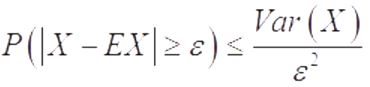
或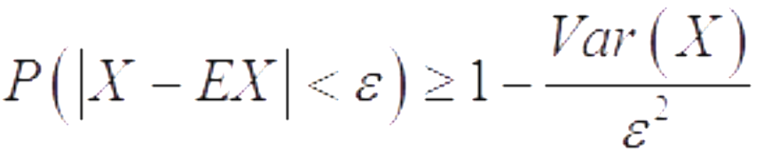
定理二：若随机变量x的方差存在，则Var（X）＝0的充要条件是X几乎处处为某个常数a，即P（X＝a）＝1．
1）二项分布
定义：若X的分布列为
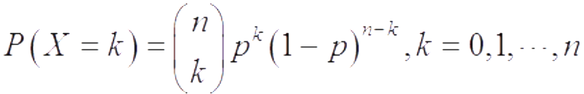
则这个分布称为二项分布，记为X～b（n，p）．
数学期望和方差
设随机变量X～b（n，p），则E（X）＝np，Var（X）＝np（1－p）．
2)二点分布
定义：n＝1时的二项分布b（1，p）称为二点分布，或称0-1分布，或称伯努利分布，其分布列为P（X＝x）＝px（1－p）1－x，x＝0，1，或记为
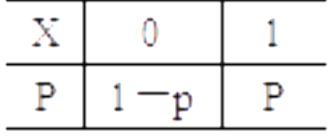
二点分布b（1，p）主要用来描述一次伯努利试验中成功（记为A）的次数（0或1）．
数学期望和方差
因为二点分布是n＝1时的二项分布b（1，p），所以二点分布的数学期望为p，方差为p（1－p）．
3)泊松分布
定义：泊松分布的概率分布列是
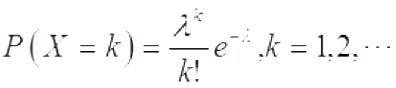
其中参数λ＞0，记为X～P（λ）．
数学期望和方差
设随机变量X～P（λ），则
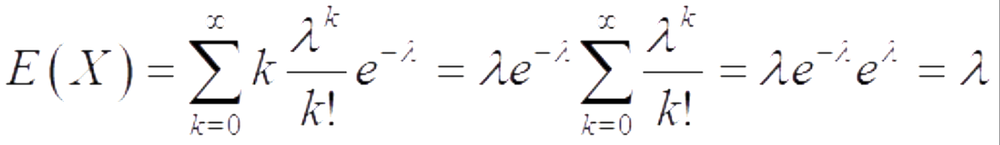
Var（X）＝E（X2）－（E（X））2＝λ2＋λ－λ2＝λ．
4)二项分布的泊松近似
泊松定理：在n重伯努利试验中，记事件A在一次试验中发生的概率为pn（与试验次数n有关），如果当n→∞时，有npn→λ，则
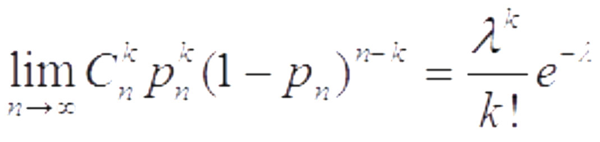
由于泊松定理是在bpn→λ条件下获得的，故在计算二项分布b（n，p）时，当n很大，p很小，而乘积λ＝np大小适中时，可以用泊松分布作近似，即
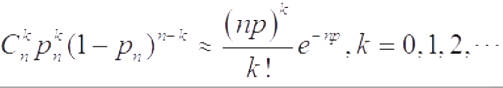
5)超几何分布
（1）设有N件产品，其中有M件不合格品．若从中不放回地随机抽取n件，则其中含有的不合格品的件数X服从超几何分布，记为X～h（n，N，M）．
超几何分布的概率分布列为
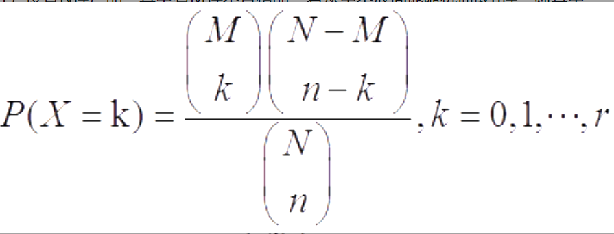
其中r＝min{M，n}且M≤N，n≤N，n，N，M均为正整数．
6)几何分布
定义
在伯努利试验序列中，记每次试验中事件A发生的概率为p，如果X为事件A首次出现时的试验次数，则X的可能取值为1，2，…，称X服从几何分布，记为X～Ge（p），其分布列为P（X＝k）＝（1－p）k－1p，k＝1，2，…．
几何分布的数学期望和方差
设随机变量X服从几何分布Ge（p）令q＝1－p利用逐项微分可得X的数学期望为
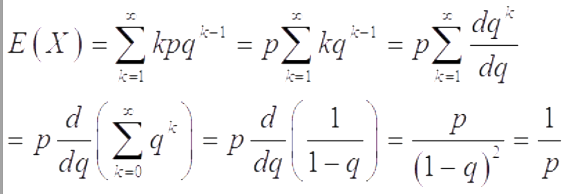
1)正态分布的密度函数和分布函数
（1）密度函数：若随机变量X的密度函数为
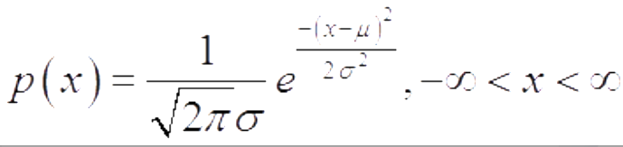
则称X服从正态分布，称X为正态变量，记作X～N（μ，σ2）．其中参数－∞＜μ＜∞，其密度函数p（x）的图形如下图所示．
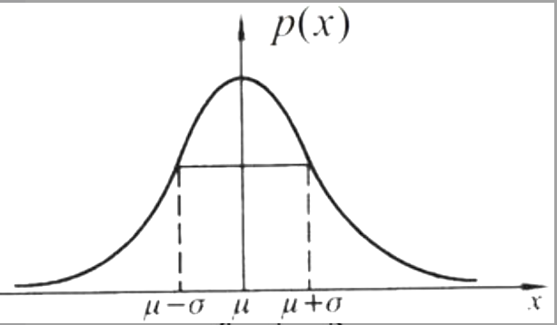
该图形有如下几个特征：
①p（x）是一条钟形曲线，中间高、两边低；
②左右关于μ对称，μ是正态分布的中心，且在x＝μ附近取值的可能性大，在两侧取值的可能性小．
③μ±σ是该曲线的拐点．
（2）分布函数：正态分布N（μ，σ2）．的分布函数为
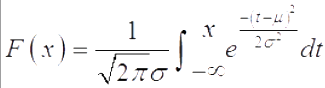
2)标准正态分布
当μ＝0，σ＝1时的正态分布N（0，1）为标准正态分布，通常记标准正态变量为U，记标准正态分布的密度函数为φ（u），分布函数为Φ（u），即
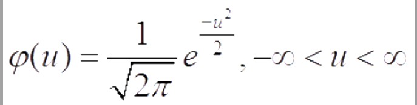
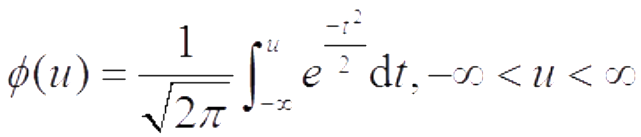
对于Φ（u）有Φ（－u）＝1－Φ（u）P（U＞u）＝1－Φ（u）P（a＜U＜b）＝Φ（b）－Φ（a）P（|U|＜c）＝2Φ（c）－1（c≥0）
3)均匀分布
均匀分布的密度函数和分布函数若随机变量x的密度函数为
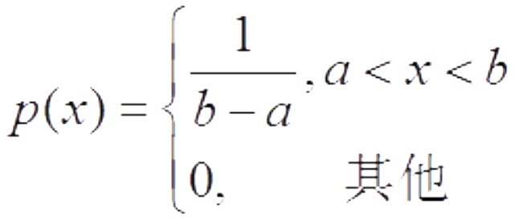
则称X服从区间（a，b）上的均匀分布，记作X～U（a，b），其分布函数为
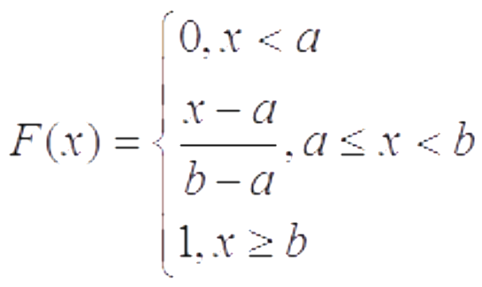
均匀分布的数学期望和方差
设随机变量X～U（a，b），则
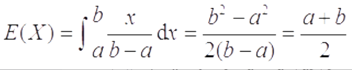
又
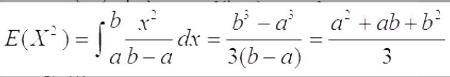
由此得X的方差为：Var（X）＝E（X2）－[E（X）]2＝（b－a）2/12．
4)指数分布
指数分布的密度函数和分布函数
若随机变量X的密度函数为
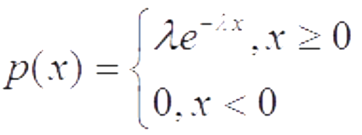
则称X服从指数分布，记作X～Exp（λ），其中参数λ＞0．
指数分布的分布函数为：
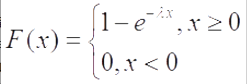
指数分布是一种偏态分布，且其随机变量只可能取非负实数，指数分布常被用作各种“寿命”分布，如电子元器件的寿命、动物的寿命、电话的通话时间、随机服务系统中的服务时间等都可假定服从指数分布．
指数分布的数学期望和方差
设随机变量X～exp（λ），则
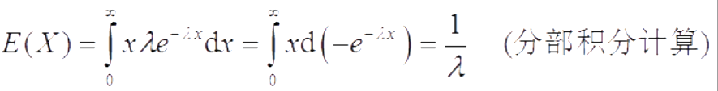
又E（X2）＝2/λ2，由此得X的方差为Var（X）＝E（X2）－[E（X）]2＝2/λ2－1/λ2＝1/λ2．
5)伽玛分布
伽玛函数
称函数
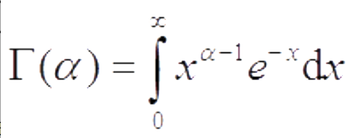
为伽玛函数，其中参数a＞0．伽玛函数具有如下性质：
①Γ（1）＝1，Γ（1/2）=√Π
②Γ（α＋1）＝αΓ（α）
当α为自然数n时，有Γ（n＋1）＝nΓ（n）＝n！（可用分部积分法证得）．
伽玛分布
若随机变量X的密度函数为
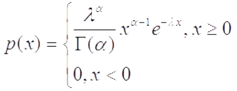
则称X服从伽玛分布，记作X～Ga（α，λ），其中α＞0为形状参数，λ＞0为尺度参数．下图给出若干条λ固定、α不同的伽玛密度函数曲线，从图中可以看出：
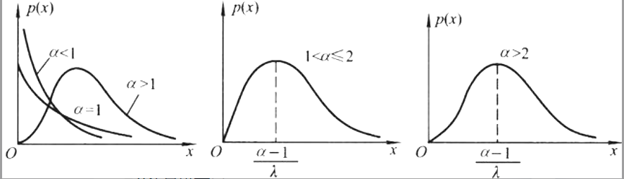
①当0＜α＜1时，p（x）是严格下降函数，且在x＝0处有奇异点．
②当α＝1时，P（x）是严格下降函数，且在x＝0处p（0）＝λ．
③当1＜α≤2时，P（x）是单峰函数，先上凸、后下凸．
④当α＞2时，P（x）是单峰函数，先下凸、中间上凸、后下凸．且α越大，P（x）越近似于正态密度，但伽玛分布总是偏态分布，α愈小其偏斜程度愈严重．
6)贝塔分布
贝塔函数
函数
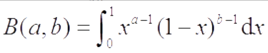
为贝塔函数，其中参数a＞0，b＞0．贝塔函数具有如下性质：B（a，b）＝B（b，a）
贝塔函数与伽玛函数间有关系：B（a，b）＝Γ（a）Γ（b）/Γ（a＋b）．
贝塔分布
若随机变量X的密度函数为
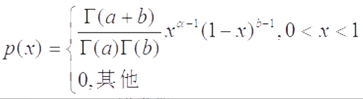
则称X服从贝塔分布，记作X～Be（a，b），其中a＞0，b＞0都是形状参数．
贝塔分布Be（a，b）的数学期望和方差
利用贝塔函数的性质，可得贝塔分布Be（a，b）的数学期望为E（X）＝a/（a＋b）．
又因为
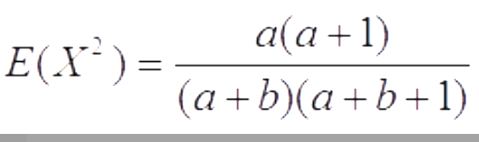
由此得X的方差为
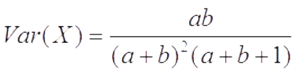